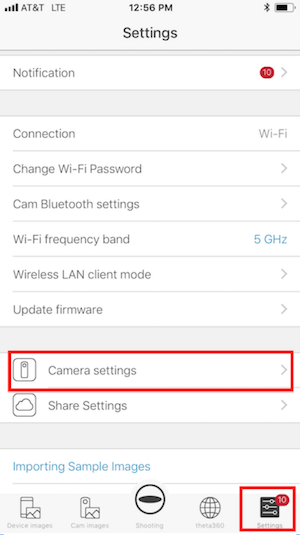
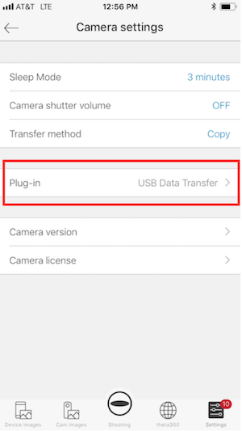
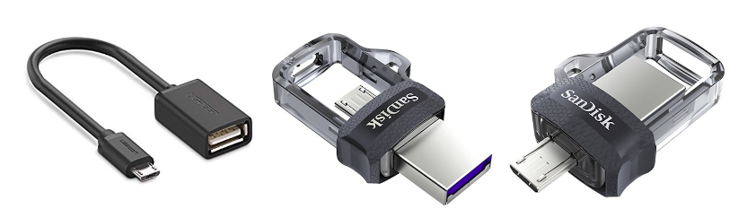
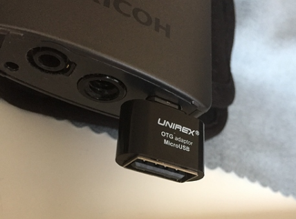
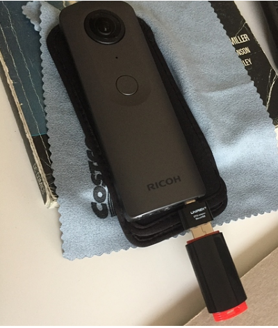
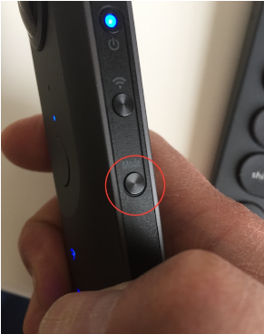
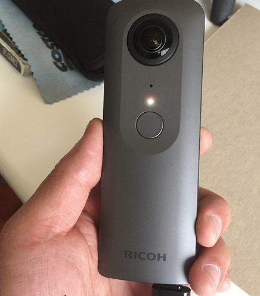
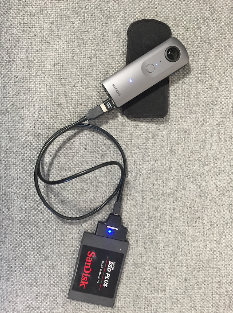

Overview
This THETA V plug-in guide will show you how to install, select and use the external USB storage plug-in that is available from RICOH.
This is an unofficial, community-generated guide for using RICOH THETA V plug-ins. This guide is not authorized by RICOH and is based on publicly available information. Special thanks to theta360.guide community member John Chu (@zzchu) for the information contained in this guide.
The process for setting up external storage is simple, and does not require advanced skills or effort. Please note, plug-ins only work with THETA V, not earlier THETA models. And a separate purchase of a miniUSB to USB "On-the-Go" Adapter is required.
USB On-The-Go (OTG) is a standardized specification for USB connections that allows a device to read data from a USB connection.
Video Tutorial
Ricoh Theta V USB Data Transfer to Flash Drive FAT32

Steps
-
Install latest THETA V firmware (2.10.1 and above)
-
Connect to your THETA V via the mobile app
-
Launch the THETA mobile app and go to Camera Settings
-
Under Plug-in select USB Data Transfer
First, from the Setting menu in the lower right corner, choose Camera Settings

Then confirm that the Plug-in is set to USB Data Transfer

Your THETA V will retain this setting. You should not need your phone again to enable USB Transfer Mode.
Transferning Files
To transfer files off your THETA V to a flash drive, follow these steps:
- Insert and connect your FLASH DRIVE via an OTG Micro USB adapter to the THETA V’s Micro USB port.
A Micro USB OTG adapter cable or a OTG Flash Drive with dual Micro USB/USB connectors will work.

Make sure your flash drive is formatted as MSDOS FAT32.
Amazon link: https://www.amazon.com/gp/product/B01M127X8F/ref=ox_sc_act_title_1?smid=ATVPDKIKX0DER&psc=1

2.With the camera powered on, press and hold the mode button until the camera status light turns WHITE.


The camera is now in USB Data Transfer Mode.
3.Start the transfer by pressing and releasing the shutter button. The camera icon will flash and blink during the transfer.
DO NOT DISCONNECT DRIVE DURING TRANSFER. (Be patient!)
Once the transfer is done, the camera status light returns to BLUE. You can now disconnect the flash drive.
The files should now be on the flash drive and the original files deleted from the camera.
The THETA is now ready to shoot again.
Notes
-
Can files larger than 4GB be transfered? Files larger than 4GBs in size will not transfer. [EDITED] It originally appeared that "if the THETA V has an assortment of movie clips and one of them exceeds 4GBs in size, it will not transfer ANY of the files." However, further testing shows "It took 22 minutes to transfer 3.8 gigs worth of files from the Theta V to a USB 2.0 flash drive. There wasn’t much power left on the Theta after the transfer. (Was recording beforehand.)" The plug-in will transfer small files and leave the files that are greater than 4GB. This is a limitation of the FAT32 filesystem.
-
Will an SSD work? Yes, it has been tested with a 240GB SanDisk SSD formatted in MSDOS FAT32 and the transfer worked correctly.

- What happens if there is not enough space in destination drive? Currently not tested